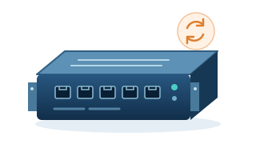
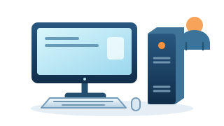
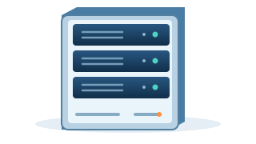
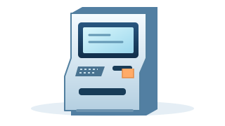

Альтернативная ОС
Внешний носитель, второй диск или другая Boot Entry создают иной путь запуска.
Средство доверенной загрузки для x86-64 и UEFI
Aladdin LiveTSM включается в загрузочную цепочку на этапе UEFI BDS, выполняет предусмотренные предзагрузочные проверки и только после этого разрешает или блокирует запуск штатной ОС.
Совместимость подтверждается на конкретной аппаратной платформе до масштабного внедрения.
Почему нужен отдельный предзагрузочный уровень
Антивирус, EDR, контроль приложений и другие механизмы работают после старта операционной системы. LiveTSM решает другую задачу: контролирует, какая среда вообще получит управление.
Внешний носитель, второй диск или другая Boot Entry создают иной путь запуска.
Подмена загрузчика, ядра, initramfs, UKI или контролируемого объекта меняет разрешённую конфигурацию.
Нештатная среда может попытаться обойти механизмы доступа, которые ещё не запущены.
Граница ответственности
До BDS доверенная инициализация относится к аппаратной платформе и базовой прошивке производителя. На BDS штатный Secure Boot проверяет доверенный компонент LiveTSM и передаёт ему управление.
Инициализация процессора, памяти, устройств и базовых сервисов UEFI выполняется до запуска LiveTSM.
Продукт выполняет предусмотренные проверки и принимает решение о продолжении или блокировании штатной загрузки.
Логика работы
LiveTSM формирует решение не по одному признаку. Перед handoff к ОС продукт последовательно проверяет собственное состояние, пользователя, платформу и заданные объекты.
Secure Boot проверяет компонент LiveTSM.
Проверяется готовность функций безопасности.
Выполняется ИА и проверка аппаратного профиля.
Контролируются назначенные политикой компоненты.
Загрузка разрешается либо блокируется с регистрацией события.
Что находится под контролем
Идентификатор, пароль, усиленная аутентификация по паролю и аппаратному токену, ограничения неуспешных попыток.
Сопоставление текущего состава контролируемых компонентов с зафиксированным аппаратным профилем.
Штатный загрузчик, ядро Linux, initramfs, UKI, параметры загрузки и назначенные файлы или папки.
Администратор определяет поддерживаемые режимы, параметры, ограничения и состав объектов контроля.
Результаты проверок, действия пользователей и изменения параметров регистрируются до запуска ОС.
Два режима запуска ОС
Оба режима начинаются с проверок LiveTSM. Различается только то, кому продукт передаёт управление после положительного решения.
LiveTSM → штатный загрузчик → ОС
LiveTSM проверяет штатный загрузчик и передаёт ему управление. Сохраняются привычные процедуры установки, обновления и восстановления ОС.
LiveTSM → ядро + параметры ядра + initramfs → Linux
или LiveTSM → UKI → Linux
LiveTSM исключает штатный загрузчик ОС, например GRUB, и непосредственно запускает либо набор «ядро + параметры ядра + initramfs», либо единый UKI. UKI уже включает ядро, параметры ядра и initramfs.
Не обещание, а проверяемая логика
Secure Boot проверяет EFI-компонент. При целевой базе доверия недоверенный загрузчик не получает управления.
Приоритет загрузочной записи сам по себе не делает компонент доверенным: подпись всё равно проверяется Secure Boot.
В целевой конфигурации исчезает доверенная точка входа, поэтому защищённая штатная загрузка становится недоступной.
LiveTSM обнаруживает несоответствие эталону и применяет предусмотренную политикой защитную реакцию.
Линейка LiveTSM
Все исполнения реализуют одинаковый состав функций безопасности. Выбор начинается с режима эксплуатации и способа установки.

Автоматическая загрузка после успешных проверок.

Пользовательский предзагрузочный сценарий.
Пользовательский сценарий для оборудования, где важна мобильность.


Полноценная настройка и администрирование через командную строку. Подходит для серверов, сетевых устройств и appliance без видеовыхода.
Визуальная оболочка для привычной работы на настольных системах и ноутбуках с экраном.
Нормативное соответствие
Средство доверенной загрузки применяется как технический компонент системы защиты. Конкретный набор мер и применимость продукта определяются категорией или классом защищённости, моделью угроз и проектными решениями.
Решение ФСТЭК России №7553 от 18 ноября 2025 года относится к средству доверенной загрузки Aladdin LiveTSM.
Важно: представленные материалы подтверждают решение о проведении сертификации, но не выдачу сертификата LiveTSM. Решение не является сертификатом соответствия.
Предоставляется по запросуРешением предусмотрена сертификация: СДЗ уровня платы расширения 4-го класса защиты и 4-й уровень доверия (УД4).
Это назначение зафиксировано в решении о проведении сертификации и не означает, что сертификат уже выдан.
Два рынка — одна техническая основа
Сценарии применения
Предзагрузочная аутентификация, контроль загрузчика и назначенных объектов, блокирование альтернативного старта.

Контроль загрузочной конфигурации, прямой запуск Linux или UKI, воспроизводимый сценарий старта.
Встраиваемое исполнение, автоматическая загрузка и отсутствие модификации базовой прошивки.

Блокирование нештатной ОС, контроль загрузочной конфигурации и аудит до запуска прикладной среды.
Совместимость
LiveTSM не позиционируется как устройство «для любого ПК». Совместимость определяется реализацией UEFI, поддержкой Secure Boot Custom и способом подключения.
Эксплуатационная документация
Материалы разделены по роли пользователя и способу работы. Руководства предоставляются по запросу.
Установка, настройка и эксплуатация через командную строку.
81 страница · PDFПредоставляется по запросуУстановка, настройка и эксплуатация через графический интерфейс.
64 страницы · PDFПредоставляется по запросуРабота с LiveTSM через интерфейс командной строки.
20 страниц · PDFПредоставляется по запросуРабота с LiveTSM через графический интерфейс.
22 страницы · PDFПредоставляется по запросуFAQ
Нет. LiveTSM использует штатные механизмы UEFI и Secure Boot в режиме Custom.
В целевой конфигурации Secure Boot проверяет подпись EFI-компонента независимо от его места в Boot Order. Сам приоритет записи не делает загрузчик доверенным.
При сохранённой защищённой конфигурации доверенная точка входа будет отсутствовать и штатная защищённая загрузка станет недоступной до административного восстановления.
Это варианты эксплуатационного сценария: автоматический без локального пользователя, пользовательский для стационарного рабочего места и пользовательский для мобильного оборудования. Форм-фактор конкретного исполнения уточняется отдельно.
Да. Для таких сценариев предназначено семейство TSMX-T110.